Firefox på Linux
 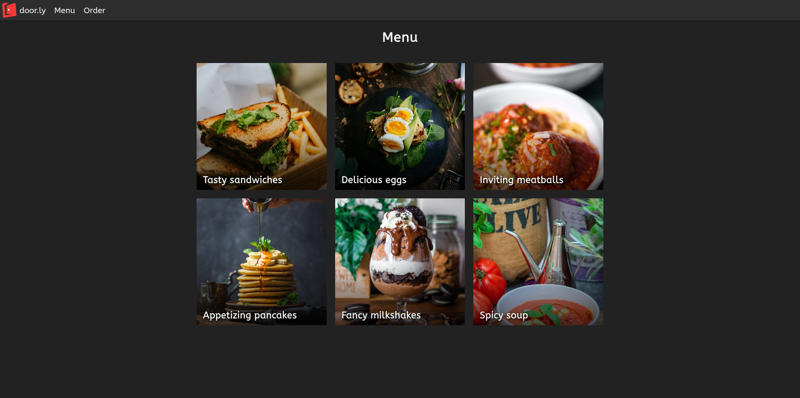
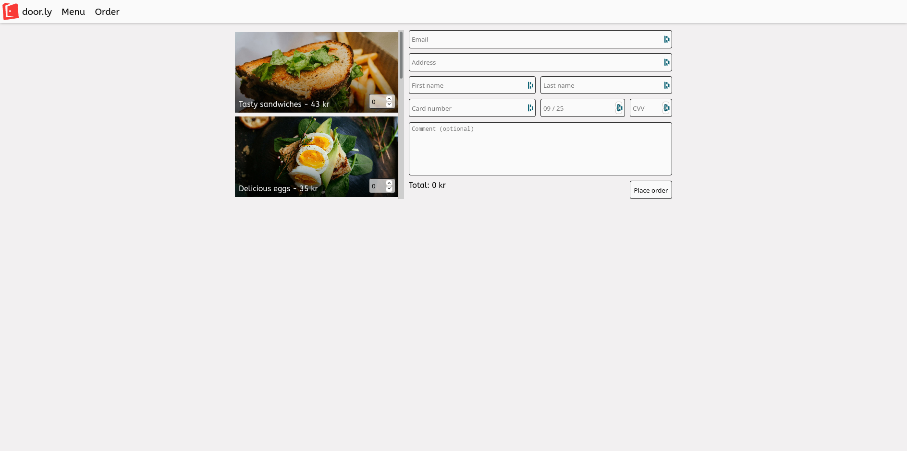
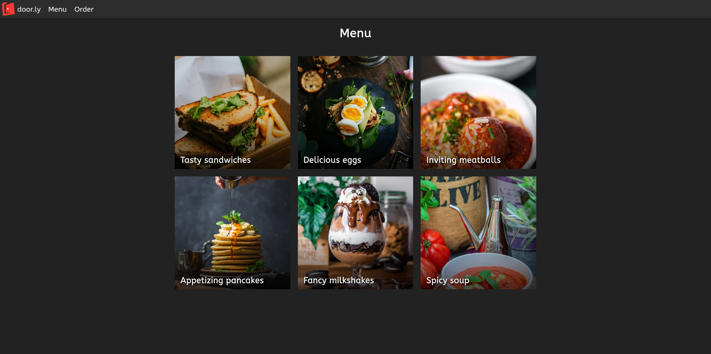
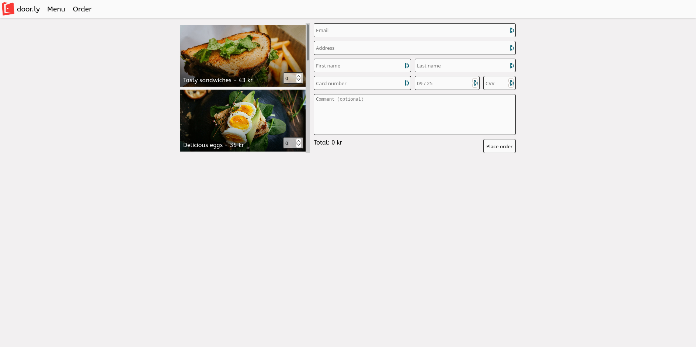
Chromium på Linux
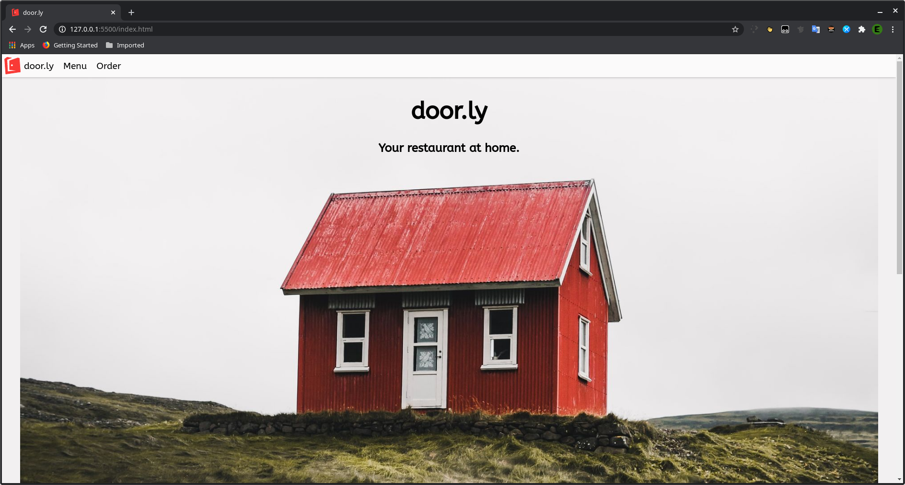 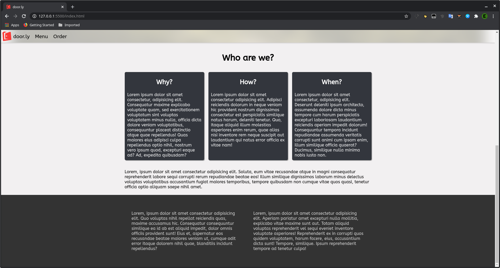 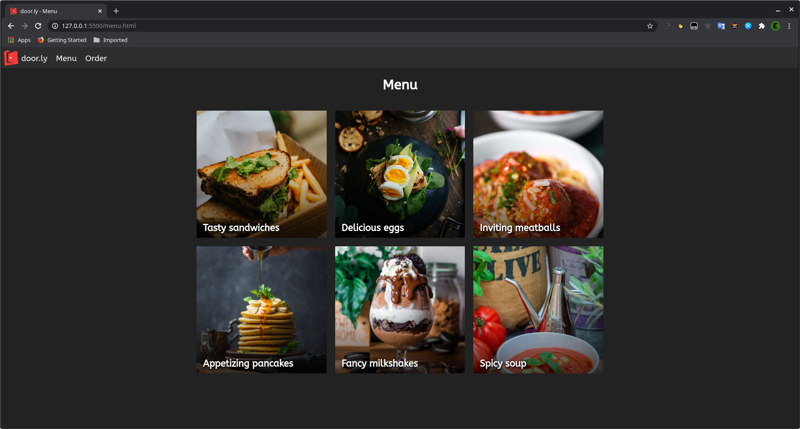 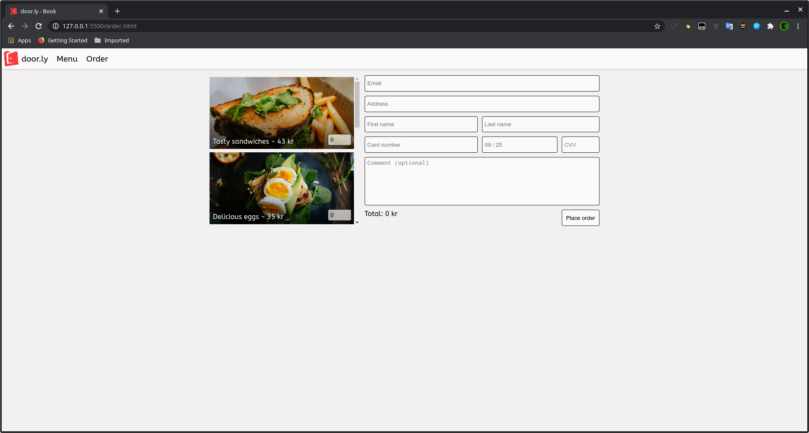Brave på iOS
 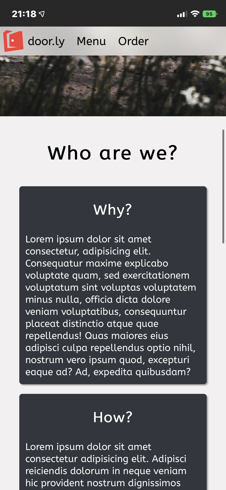
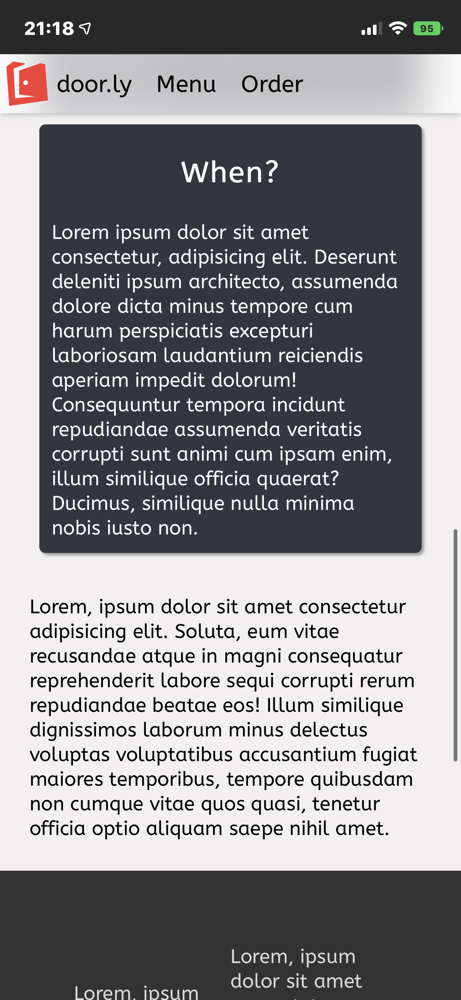
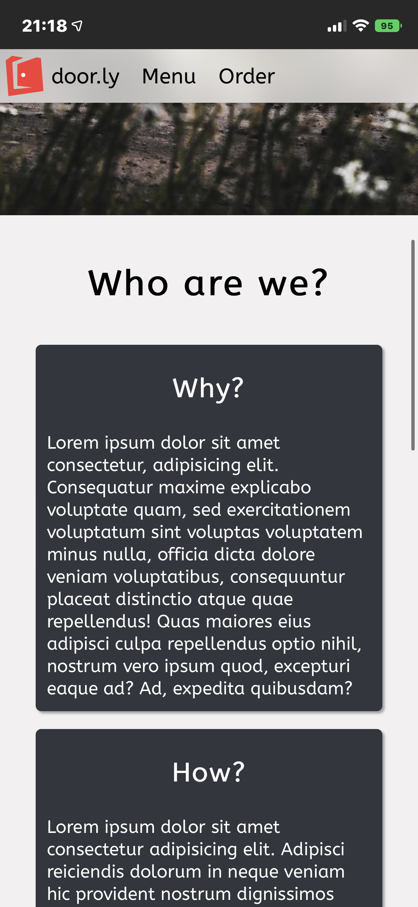
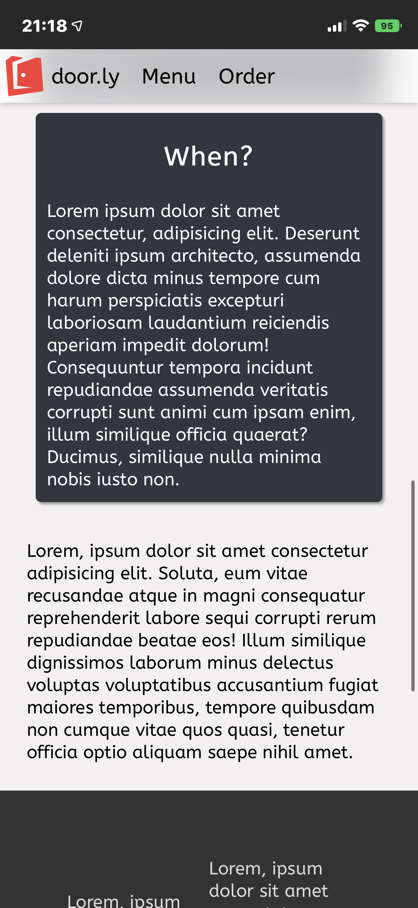


Safari på iOS
 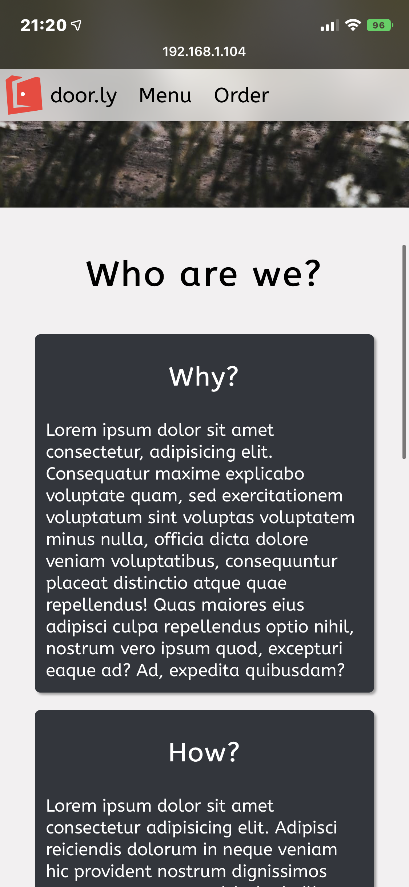
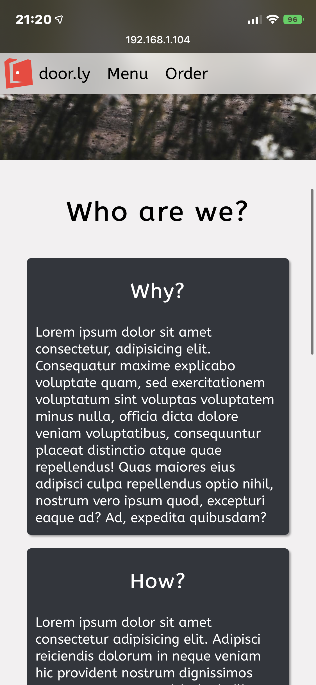


| Vecka | På lektionerna | Utanför lektionerna |
|---|---|---|
| 47 | Komma på en idé och skapa en skiss för layouten (startsidan) | Fortsätta med det jag gör under lektionerna denna veckan, kanske styla dokumentationssidan |
| 48 | Implementera layouten för startsidan och skapa själva hemsidan | Komma på en idé för layouten (och innehållet) på de två andra sidorna |
| 49 | Implementera layouten för de två andra sidorna | Förbättra CSSen och göra hemsidan snyggare |
| 50 | Buffert för de tidigare veckorna / förbättra | Se till att hemsidan är färdig för att lämnas in |
Eftersom jag är väldigt dålig på att bestämma vad jag ska göra så tog det lite längre tid än väntat att välja namn och inriktning på mitt projekt.
Jag började även på en logga till hemsidan i programmet krita.
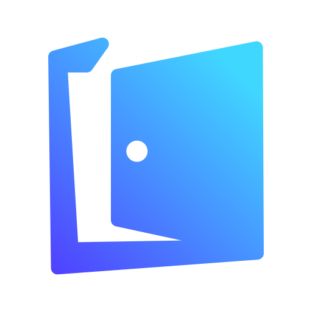Jag hade lite olika små problem med att få bakgrunden att fungera med olika skärmupplösningar
Genom att använda media queries så lyckades jag lösa problemet med att den visades fel.
h1 {
font-size: 5.5vh;
}
h2 {
font-size: 2.75vh;
}
@media screen and (max-width: 940px) {
header#start-screen {
background-size: 200vw;
}
h1 {
font-size: 5.5vw;
}
h2 {
font-size: 2.75vw;
}
}Detta gör att den vid en viss skärmstorlek byter till att börja scalea beroende på skärmbredden och skärmhöjden, så att huset alltid visas mitt på skärmen
Jag gjorde även om loggan eftersom jag inte tyckte den passade så bra till resten av sidan
Dessutom är den nya loggan en .svg-fil och är därför väldigt mycket mindre i storlek och fungerar på fler skärmupplösningar än den förra
Jag lade till det mesta innehållet på index-sidan och använde contrast checker för att se till att
färgerna är tillgängliga. Från början använde jag en kombination av #84848 (förgrund) och #333 (bakgrund), men eftersom
kontrasten är dålig med de färgerna så ändrade jag förgrundsfärgen till #DADADA.
Jag skapade menu-sidan och grid-layouten på den sidan där den skulle visa bilder på olika "tillgängliga maträtter", men jag hade problem med att kontrasten mellan texten som skulle stå på bilderna och själva bilderna blev för låg. Detta gjorde det ganska svårt att läsa och såg inte så bra ut.
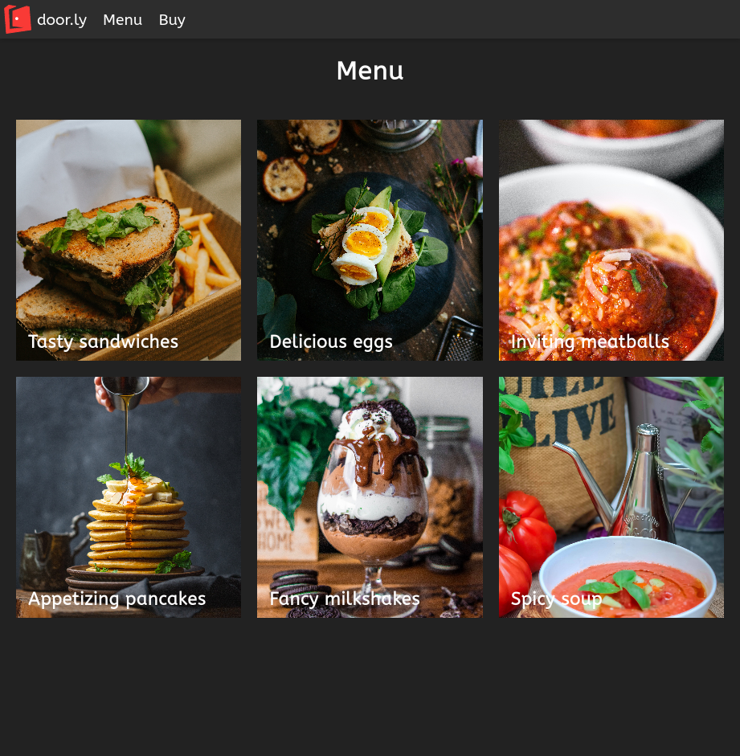
För att lösa detta så lade jag till en textskugga bakom texten. Detta gjorde texten enkel att läsa men gav lite väl mycket kontrast. Därför valde
jag att också lägga till en linear-gradient() över bakgrundsbilden och därmed göra så att bilden är något mörkare längre ner
Detta hjälpte väldigt mycket med läsligheten och utseendet på menyn.
Jag gjorde färdig min order-sida och fixade massa små problem överallt på hemsidan, mestadels med cssen
Ett problem jag upptäckt var med att nav-baren använde sig av position: sticky; vilket orsakade att den slutade följa med längst upp på
sidan när man scrollade förbi den första skärmen i höjd på sidan. Detta ledde till att jag bytte ut den mot position: fixed; istället.
Däremot orsakade detta några andra problem
Det största problemet var att resten av sidan var beroende på att nav-baren tog upp plats på hemsidan. Detta löste jag genom att lägga till en
div vid början i htmlen för varje sida.
Jag testade hemsidan på följande enheter/webbläsare:
Under min testning så upptäckte jag lite olika problem.
Det största var att order-sidan knappt fungerade på min telefon, då den inte flyttade runt innehållet när skärmen blev mindre.
Jag löste detta genom att lägga till en media query som ändrade grid-template-areas och grid-template-columns/rows när
skärmen blev en viss storlek vilket fungerade väldigt bra.
Tyvärr glömde jag ta screenshots innan jag fixade problemen, så screenshotsen är från efter jag fixade den, så dessa problemen går inte att se i bilderna.
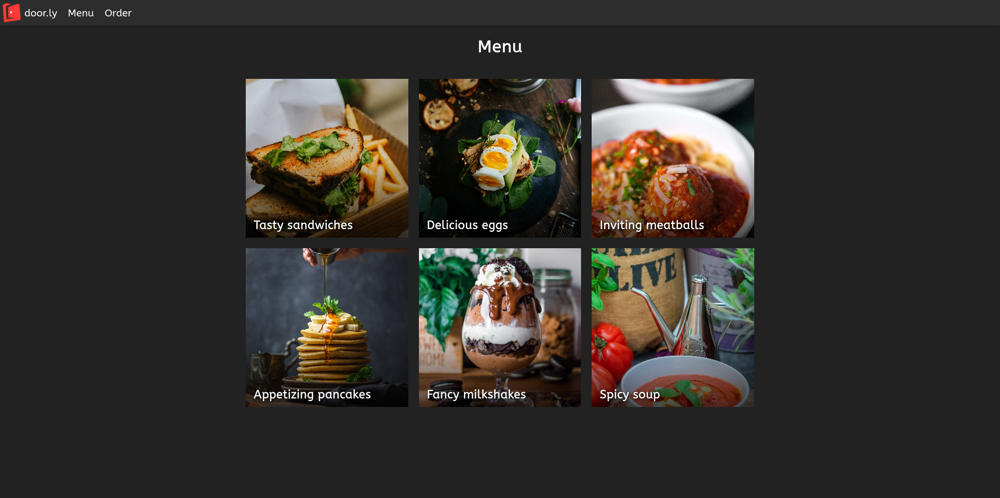
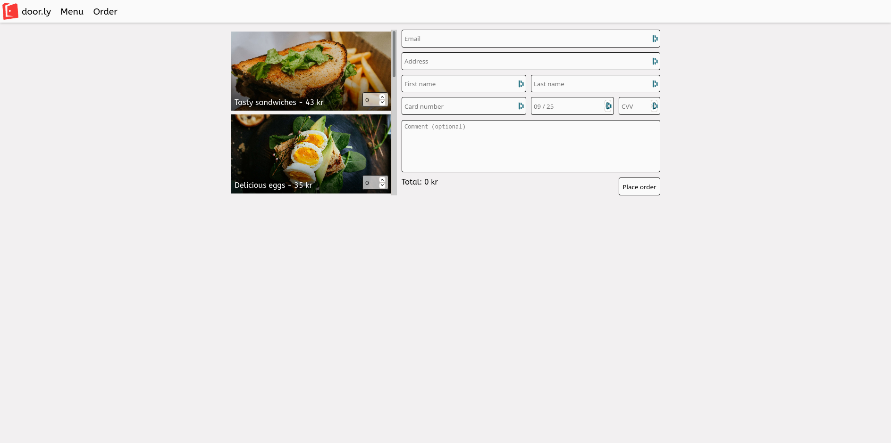
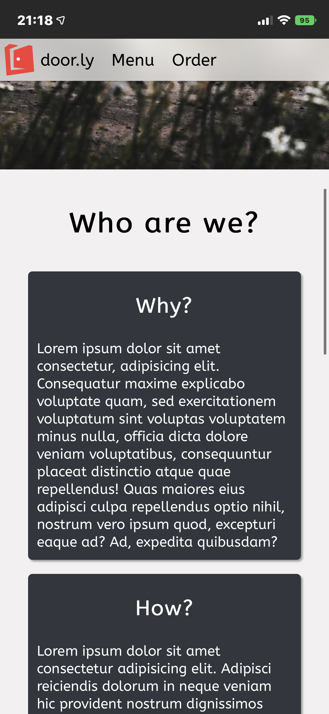
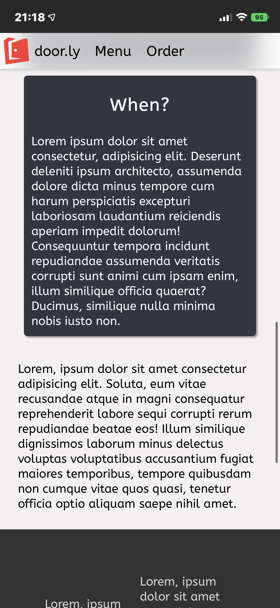
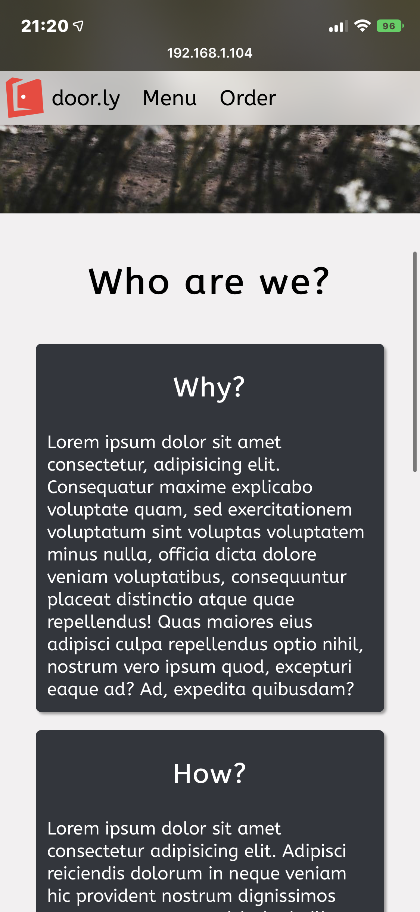
Jag använde också contrastchecker.com för att kontrollera så att färgerna har tillräckligt hög kontrast för att läsas.
Länk till dokumentation om contrastchecker.com
Jag använde även W3s validators för html och css:
Med hjälp av dessa hittade jag följande fel i htmlen: Jag hade inte alltid h2-taggar som sub-headings istället för h1, jag hade råkat sätta
id-attributen två gånger på comment-boxen på Order-sidan, jag hade fel language tags på några av sidorna.
Alla dessa gick enkelt att fixa och nu är koden semantisk och korrekt!
Utöver dessa kontrollerade jag även alla sidorna med
Google Lighthouse.
Google Lighthouse kontrollerar massa saker på sidan och ger en "score" för olika kategorier, såsom tillgänglighet, 'best practices',
sökmotorsoptimiering och prestanda. Den enda kategorien som inte fick så bra scores var prestandra-scoren. Detta är på grund av att bilderna som jag
hade när jag testade är för stora, men jag har nu skalat ner bilderna så det problemet har försvunnit.
Jag tycker att största delen av projektet gick ganska bra. Då jag hållt på med hemsidor och css ganska mycket innan så tyckte jag det mesta var ganska enkelt.
Däremot, som vanligt när man programmerar eller håller på med webbutveckling har jag stött på några problem. Det största som tog längst tid att lösa var att bakgrundsbilden inte fungerade som jag ville att den skulle göra. Jag lyckades däremot lösa det ganska snabbt
Det som gick dåligast under detta projektet var min tidshantering. Jag gjorde inte så mycket i början och hamnade ca en vecka efter direkt. Däremot hade jag som tur en buffertvecka i mitt schema vilket hjälpte mycket och jag hann färdigt med hemsidan i tid ändå.
Som förbättringsförslag till hemsidan så kan man självklart lägga till mer interaktivitet till hemsidan. Såsom den är nu så är det egentligen inget på hemsidan som "gör något" förutom pris-räknaren på Order-pagen.
Jag hade kunnat lägga till en "lightbox" till menu-pagen, (vilket jag tänkte göra, som förklarar varför vissa av taggarna har lightbox som id), men eftersom det tar ganska mycket tid (speciellt med att komma på hur man ska få den att kännas som om den ska vara där) så valde jag att inte göra den.
Sedan tror jag det kan vara bättre att göra en mer nogrann skiss i början också, för jag hade lite svårt att bestämma vad som skulle stå i den tomma layouten